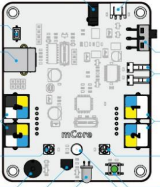

Vue de la carte mCore
Choisis la zone que tu souhaites examiner en premier.
Le comportement du robot n’a pas changé après la correction du programme.
Tu vas maintenant inspecter la carte mCore et choisir quel élément vérifier.

Alimentation / interrupteur
Port USB de programmation
Capteurs (bouton, lumière, IR)
Ports moteurs (M1 / M2)
Autres connecteurs (RJ25, LEDs…)
Journal de mission
INFO
Le programme a été corrigé, mais le mBot tourne toujours en rond.
INFO
Tu dois maintenant choisir quelle partie de la carte vérifier en premier.
Consigne
Clique sur l’un des libellés à droite de la carte pour lancer ton inspection.